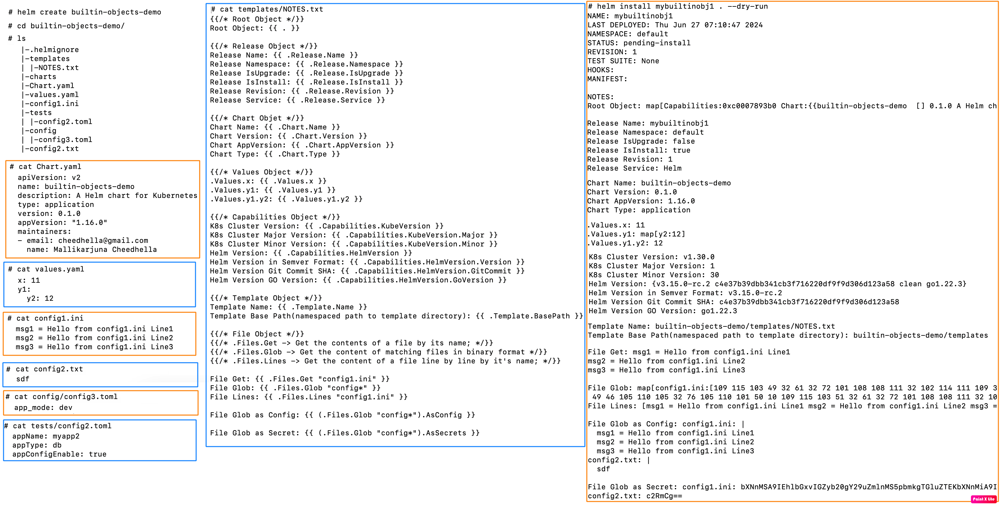

. context;.Values, .Release, .Chart, .Files, .Capabilities, .Template;.Release, .Chart, .Values, .Capabilities, .Template, .Files, .Subcharts;-f files, and --set flags (merged, later sources win);{{ .Files.Get "config/db.conf" | indent 4 }}data:
app.conf: |
{{ .Files.Get "config/app.conf" | indent 4 }}{{ if .Capabilities.APIVersions.Has "networking.k8s.io/v1/Ingress" }}
apiVersion: networking.k8s.io/v1
{{ else }}
apiVersion: networking.k8s.io/v1beta1
{{ end }}
. (dot) is the current scope/context passed to the template;. contains all built-in objects (.Values, .Release, .Chart, etc.);with, range) change what . points to inside their block;
------------------------------------------------------------------------------------------------------------------------------------------------------
Files Object
- It provides access to all non-special files in a chart;
- We can use it to access files in the charts folder;
- We can't use it to access templates;
> cat config1.ini
msg1 = Hello from config1.ini Line1
msg2 = Hello from config1.ini Line2
msg3 = Hello from config1.ini Line3
> cat config-files/myconfig2.toml
appName: myapp2
appType: db
appConfigEnable: true
> cat config-files/myconfig3.toml
{{/* .Files Object Demo */}}
File Get: {{ .Files.Get "myconfig1.ini" }} # Prints the content of the file specified
File Glob as Config: {{ (.Files.Glob "config-files/*").AsConfig }} # Returns file body as YAML map
File Glob as Secret: {{ (.Files.Glob "config-files/*").AsSecrets }} # Returns file body as base-64 encoded string
File Lines: {{ .Files.Lines "myconfig1.ini" }} # It iterates over file content line by line and prints as single line;
File Glob: {{ .Files.Glob "config-files/*" }} # It is useful iterate over file content line by line;
------------------------------------------------------------------------------------------------------------------------------------------------------